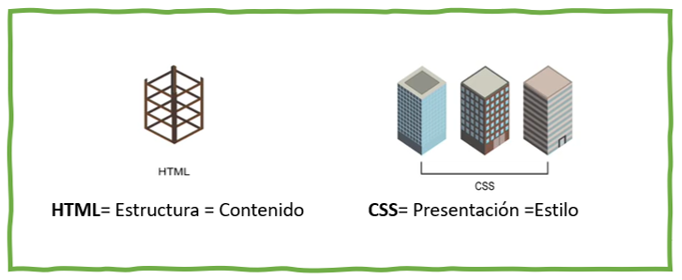

Diseñar un OVI(Objeto Virtual de Información), de las propiedades básicas de CSS, Display: Inline block, Inline-block
Los siguientes son los recursos viruales utilizados como apoyo para el desarrollo de la tematica
Video: Estilos css: display block, inline, inline-block y floatCSS significa Cascade Style Sheets, que se traduce al español como “Hojas de Estilo en Cascada”.
Las hojas de estilo son un recurso que existe desde que se usaba el antecesor del HTML
Es el lenguaje con el cual se aplica una capa de presentación y estilo (uno encina del otro) a un sitio web. HTML y CSS son el dúo perfecto para la creación de sitios web.
Html, seria así la estructura y css, permite realizar la capa de presentación visual.
Esta parte de CSS, serían las reglas que se podrían modificar en cualquier momento para cambiar la presentación y apariencia del sitio web, en cuanto a colores, tipos de fuente, bordes, alineaciones, etc…
Así todas estas hojas de estilo son la colección de reglas de formato dependiendo de las características que se quieran aplicar o modificar en el sitio web, esta colección de estilos generalmente están contenidos en archivos externos al documento HTML y se debe aplicar en efecto de cascada desde los estilos externos hasta los locales. Una de las ventajas que estos archivos se trabajen por separado es que varios archivos html, pueden compartir la misma hoja de estilos de CSS, optimizando el tiempo de carga del sitio y facilitando el mantenimiento de su parte visual. El lenguaje CSS; es muy potente, flexible y fácil de aprender si se tienen bases de HTML.
Display block Posicionamiento por defecto verticalmente y respeta el ancho y el alto
Display inline Posicionamiento horizontal, no reconoce ni el ancho ni el alto
Display inline-block Combinación, donde las capas se ponen en horizontal y respetan el ancho y el alto establecido
Mockup,Imagen propia realizada con la herramienta Balsamiq, que representa el modelado del OVI
Ojeda, A. N. (2012). Guía Completa de CSS3.